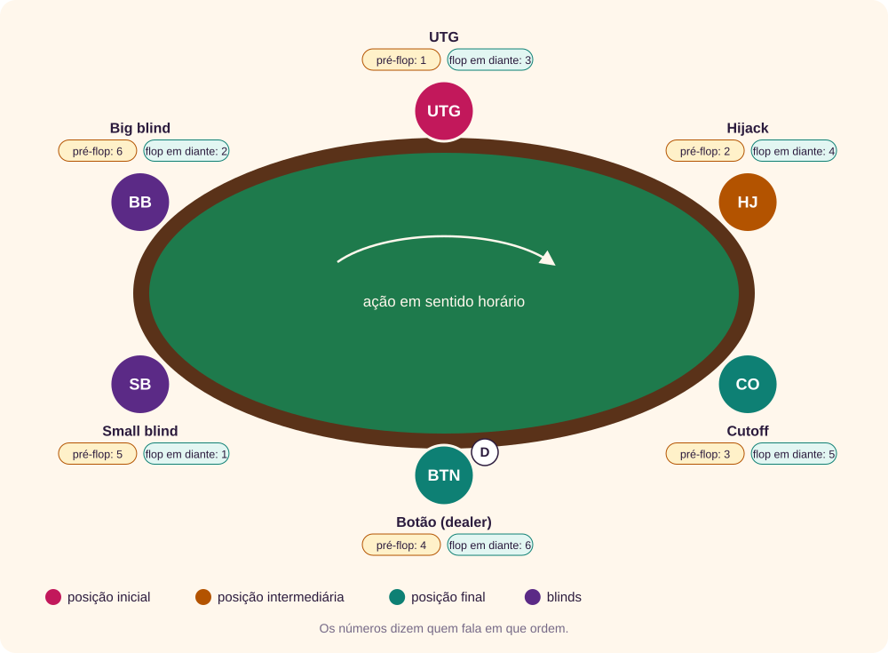
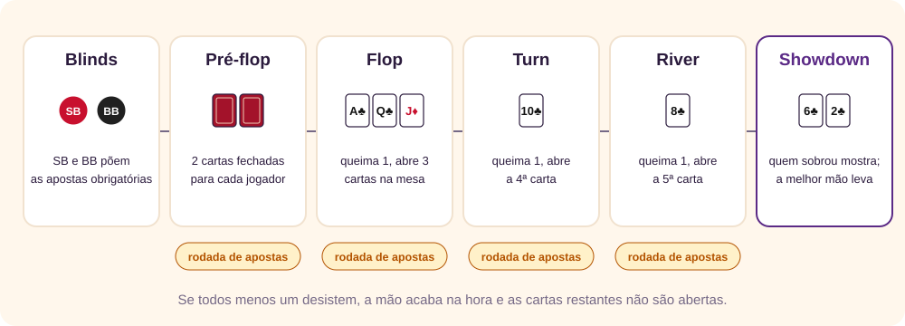
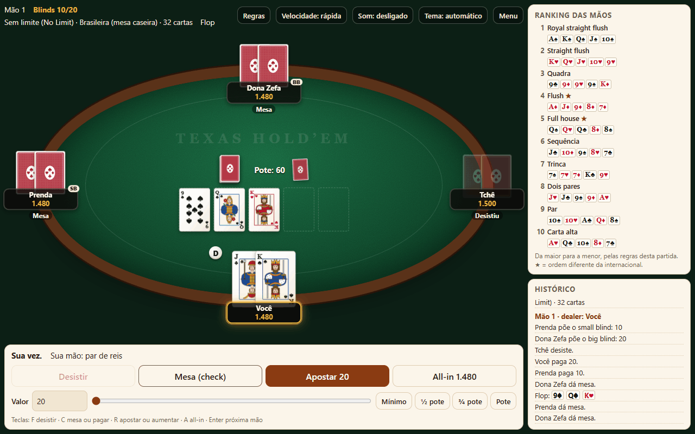
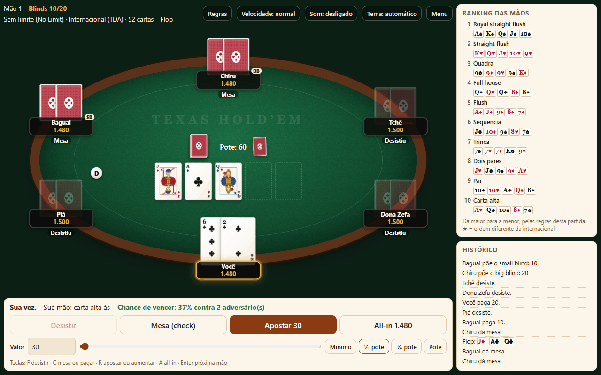
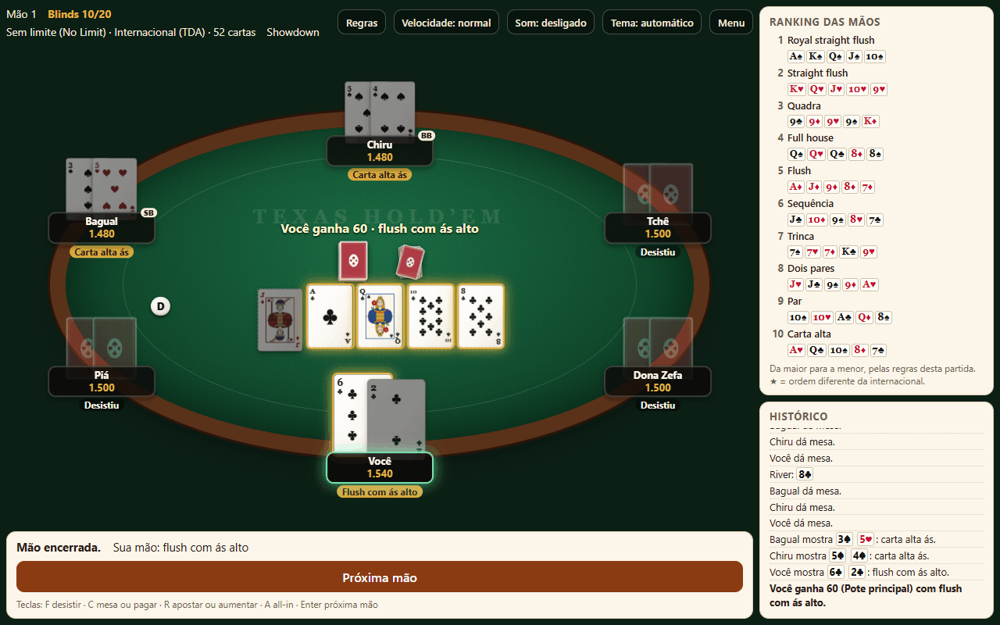
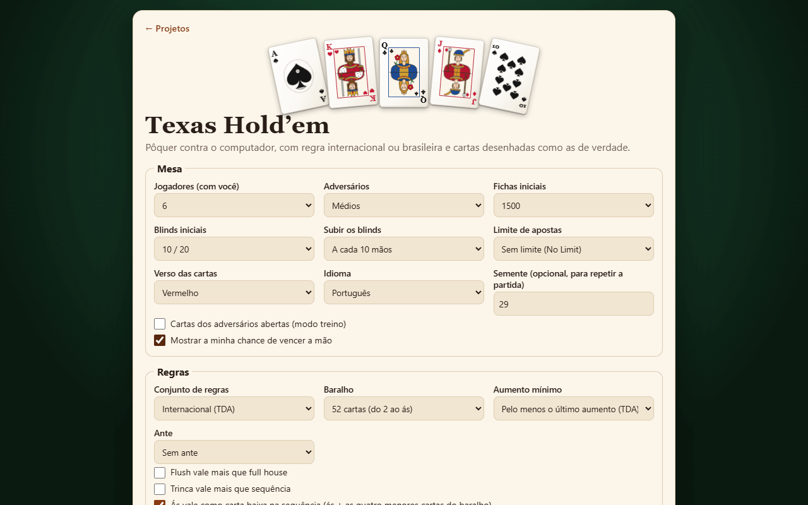

O jogo em um minuto
No Texas Hold’em cada jogador recebe duas cartas fechadas, só dele, e a mesa abre aos poucos cinco cartas comunitárias, que servem para todos. Vence quem formar a melhor mão de cinco cartas com essas sete, ou quem fizer todos os outros desistirem antes. [1]
Entre uma abertura e outra há rodadas de apostas. É aí que está o jogo: decidir quando pagar, quando aumentar e quando largar a mão. Você pode ganhar com a pior mão, se ninguém pagar para ver, e perder com uma boa, se apostar mal.
↑ Voltar ao topoUma breve história
Pouco se sabe sobre a invenção do jogo. O Legislativo do Texas reconhece a cidade de Robstown como o berço do Texas Hold’em, no início do século XX. [1][3]
- 1963 a 1967 — Las Vegas. O jogo chegou a Las Vegas em 1963, no California Club, levado por Corky McCorquodale. Em 1967, um grupo de jogadores texanos, entre eles Crandell Addington, Doyle Brunson e Amarillo Slim, jogava na cidade. Por vários anos o Golden Nugget foi o único cassino a oferecer o jogo. [1]
- 1969 a 1971 — a World Series of Poker. Em 1969 profissionais foram convidados a jogar na entrada do cassino Dunes. Em 1970 Benny e Jack Binion compraram os direitos do encontro, chamaram-no de World Series of Poker e o levaram ao Binion’s Horseshoe. [1] O primeiro campeão, Johnny Moss, foi eleito pelos colegas. No ano seguinte o Evento Principal virou um torneio de Texas Hold’em por eliminação. [2] Foi o jornalista Tom Thackrey quem sugeriu que ele fosse sem limite. [1]
- 1999 a 2003 — a câmera e a internet. Em 1999 o programa britânico Late Night Poker passou a mostrar as cartas fechadas com câmeras escondidas na mesa. Em 2003 o World Poker Tour adotou a ideia, e o jogo explodiu na televisão. No mesmo ano Chris Moneymaker, um amador que se classificou em torneios online, venceu o Evento Principal. [1]
- O boom. O Evento Principal teve 839 inscritos em 2003, 5.619 em 2005 e 8.773 em 2006. [1] Em 2024 bateu o recorde, com 10.112 inscrições. [2] O Hold’em tomou o lugar do seven-card stud como o pôquer mais comum nos cassinos dos Estados Unidos. [1]
Os tipos de Texas Hold’em
As cartas e o ranking são os mesmos em todo lugar. O que muda é quanto se pode apostar, como o jogo termina e, em algumas variantes, o baralho.
Pelo limite de aposta
| Tipo | Quanto se pode apostar | No app |
|---|---|---|
| Limite fixo (Fixed Limit) | Apostas e aumentos do tamanho do big blind no pré-flop e no flop (a aposta pequena) e do dobro no turn e no river (a aposta grande). [1] | Sim, com no máximo uma aposta e três aumentos por rodada. |
| Limite do pote (Pot Limit) | O aumento máximo é o tamanho do pote, contando o valor para pagar. [1] | Sim. |
| Sem limite (No Limit) | Qualquer valor, até todas as fichas. O aumento mínimo é o tamanho da aposta ou do aumento anterior. [1] | Sim. É o padrão. |
Pela forma de disputa
- Cash game: as fichas valem dinheiro, os blinds não mudam e cada um sai quando quiser.
- Torneio: todos começam com as mesmas fichas, os blinds sobem de tempos em tempos e quem perde tudo está fora, como no Evento Principal da WSOP, disputado por eliminação desde 1971. [2] No app, a opção Subir os blinds dá esse ritmo de torneio.
- Heads-up: só dois jogadores. O dealer põe o small blind e fala primeiro antes do flop. [1] O app aplica essa regra quando sobram dois na mesa.
Pelo baralho
- Short deck (6+): tiram-se os 2, 3, 4 e 5, sobrando 36 cartas. O flush passa a valer mais que o full house, e A-6-7-8-9 é sequência. [4]
- Mesa caseira brasileira: muitas mesas jogam com baralho reduzido e flush acima do full house. Uma plataforma brasileira de pôquer online publica essa mesma ordem, com A-6-7-8-9 valendo sequência. [5] Não há um regulamento oficial único. Veja Regra internacional e regra brasileira.
O ranking das mãos
Conta sempre a melhor combinação de cinco cartas entre as sete disponíveis: suas duas e as cinco da mesa. Pode usar as duas, uma ou nenhuma das suas. [1] Da maior para a menor, na regra internacional:
| Mão | O que é | Exemplo | Frequência em 7 cartas |
|---|---|---|---|
| Royal straight flush | 10 a ás do mesmo naipe | A♠ K♠ Q♠ J♠ 10♠ | 0,03% |
| Straight flush | Sequência do mesmo naipe | 9♥ 8♥ 7♥ 6♥ 5♥ | |
| Quadra | Quatro cartas do mesmo valor | 9♠ 9♦ 9♥ 9♣ K♦ | 0,17% |
| Full house | Uma trinca e um par | Q♠ Q♥ Q♣ 8♦ 8♠ | 2,6% |
| Flush | Cinco cartas do mesmo naipe | A♦ J♦ 9♦ 8♦ 7♦ | 3,0% |
| Sequência | Cinco valores seguidos, de naipes diferentes | J♣ 10♦ 9♠ 8♥ 7♣ | 4,6% |
| Trinca | Três cartas do mesmo valor | 7♠ 7♥ 7♦ K♣ 9♥ | 4,8% |
| Dois pares | Dois pares diferentes | J♥ J♠ 9♠ 9♦ A♥ | 23,5% |
| Par | Duas cartas do mesmo valor | 10♠ 10♥ A♣ Q♦ 8♠ | 43,9% |
| Carta alta | Nada disso: vale a carta mais alta | A♥ Q♣ 10♠ 8♦ 7♠ | 17,4% |
As frequências são de 300.000 mãos de sete cartas sorteadas com o avaliador do app. [9] Elas batem com a tabela exata de probabilidades, que dá 2,60% para o full house. [6] O ás vale como carta mais alta ou, na sequência A-2-3-4-5, como a mais baixa.
Empates e kicker
Se duas mãos são do mesmo tipo, vence a de valores mais altos: par de reis ganha de par de damas. Se o par é igual, decidem as outras cartas, os kickers, uma por uma. Se as cinco cartas empatam, o pote é dividido, e a ficha que sobrar vai para o primeiro vencedor à esquerda do dealer. [1]
Na tela acima, você e Dona Zefa têm 8 e 4. O 4 não entra na mão de ninguém: as cinco melhores cartas de cada um são 8, 8, A, J e 9. Empate exato, e cada um leva metade.
↑ Voltar ao topoDealer, blinds e posições
O botão do dealer (D) marca quem dá as cartas naquela mão e gira no sentido horário a cada mão. Os dois jogadores à esquerda dele põem apostas obrigatórias antes de ver as cartas: o small blind (SB) e o big blind (BB), que costuma ser o dobro. [8] Os blinds garantem que sempre haja algo no pote para disputar.

- Antes do flop, começa quem está à esquerda do big blind, chamado UTG (under the gun, “sob a mira”), e o big blind fala por último. [8]
- Do flop em diante, começa o primeiro jogador ainda na mão à esquerda do dealer, e o dealer fala por último.
Falar por último é uma vantagem: você decide já sabendo o que os outros fizeram. Por isso o botão é a melhor posição da mesa, e o UTG a pior. [8]
↑ Voltar ao topoAs rodadas de uma mão

- Pré-flop. Cada um recebe duas cartas fechadas, uma por vez, começando pelo small blind. Primeira rodada de apostas.
- Flop. O dealer queima uma carta (descarta sem mostrar) e abre três na mesa. Segunda rodada.
- Turn. Queima uma e abre a quarta. Terceira rodada.
- River. Queima uma e abre a quinta. Última rodada.
- Showdown. Quem continua na mão mostra as cartas, e a melhor mão leva o pote. [1]
A mão pode acabar antes: se alguém aposta e todos os outros desistem, ele leva o pote sem mostrar as cartas. Quem mostra primeiro no showdown varia. No app, mostra primeiro quem fez o último aumento da mão; se ninguém aumentou, o primeiro à esquerda do dealer. A Wikipédia em português descreve outra ordem, com o último a agir mostrando por último. [3]
↑ Voltar ao topoApostar: ações e limites
Na sua vez, você tem estas opções: [3]
| Ação | Quando | O que faz |
|---|---|---|
| Desistir (fold) | Sempre | Larga a mão e perde o que já pôs no pote. |
| Mesa (check) | Quando não há aposta a pagar | Passa a vez sem pôr fichas. |
| Pagar (call) | Quando há aposta | Iguala a maior aposta da rodada. |
| Apostar (bet) | Quando ninguém apostou na rodada | Abre a aposta. O mínimo é o big blind. |
| Aumentar (raise) | Quando há aposta | Põe mais que a maior aposta, obrigando os outros a pagar a diferença. |
| All-in | Sempre | Põe todas as suas fichas. |
Na tela acima, o big blind é 20. Para aumentar, você precisa ir a pelo menos 40: o aumento mínimo é do tamanho do último aumento, que aqui é o próprio big blind. [1] Se alguém aumentar de 20 para 60, o próximo aumento terá de ir a pelo menos 100.
Um all-in menor que um aumento completo não reabre a aposta: quem já falou só pode pagar ou desistir. [1] O app segue essa regra.
↑ Voltar ao topoAll-in e potes laterais
Ninguém precisa sair da mão por falta de fichas: quem não tem o suficiente para pagar vai all-in com o que tem. Mas só pode ganhar, de cada adversário, o mesmo valor que pôs. O excesso forma potes laterais, que só os outros disputam.
No showdown, cada pote é resolvido separado, só entre quem o disputa. Se Ana tiver a melhor mão e Duda a segunda, Ana leva os 450 do principal e Duda leva os dois laterais. O app monta os potes desse jeito e mostra cada um no centro da mesa. Uma aposta que ninguém pagou volta para quem apostou antes de montar os potes.
↑ Voltar ao topoRegra internacional e regra brasileira
O app tem dois conjuntos prontos. Cada item pode ser ligado ou desligado na tela inicial, e qualquer mudança vira o conjunto Personalizada.
| Item | Internacional | Brasileira (mesa caseira) |
|---|---|---|
| Baralho | 52 cartas | Reduzido: do 7 ao ás (32 cartas) até 4 jogadores, mais um valor por jogador extra; com 9 jogadores volta a 52 |
| Flush e full house | Full house vale mais [6] | Flush vale mais [5] |
| Sequência mais baixa | A-2-3-4-5 | O ás com as quatro menores do baralho, como A-7-8-9-10 com 32 cartas |
| Aumento mínimo | O tamanho do último aumento [1] | O dobro da aposta atual [8] |
Por que o flush sobe? Porque, com menos cartas de cada naipe, ele fica raro. Medimos 300.000 mãos de sete cartas em cada baralho com o avaliador do app: [9]
| Baralho | Flush | Full house | Quadra | Sequência |
|---|---|---|---|---|
| 52 cartas (2 ao ás) | 3,0% | 2,6% | 0,16% | 4,6% |
| 36 cartas (6 ao ás) | 2,1% | 7,6% | 0,55% | 7,3% |
| 32 cartas (7 ao ás) | 1,7% | 10,6% | 0,78% | 7,7% |
Com 32 cartas, o full house sai seis vezes mais que o flush. Manter o full acima seria premiar a mão mais comum. O guia de Texas Hold’em deste site traz a mesma comparação para mãos de cinco cartas. [8] Uma curiosidade: sete cartas nunca formam flush e full house ao mesmo tempo, então a troca só muda quem ganha entre jogadores diferentes.

Uma mão comentada
Esta mão foi jogada no app com a semente 29, seis jogadores, regra internacional e a ajuda de chance de vencer ligada. Você pode repeti-la: digite 29 em Semente e sempre pague ou dê mesa. [9]
- Pré-flop. Você recebe 6♣ 2♣ no cutoff. O app estima 19% de chance de vencer contra os três que restam (veja a tela em Apostar). É uma mão fraca: pagar aqui é a jogada do teste, não um conselho.
- Flop: J♦ A♣ Q♣. Você tem só carta alta, mas duas cartas de paus na mesa: falta uma para o flush. Ninguém aposta.

- Turn: 10♣. O flush chega: A♣ Q♣ 10♣ 6♣ 2♣.
- River: 8♣. Mais uma de paus. Agora o seu flush usa A♣ Q♣ 10♣ 8♣ 6♣, e o 2♣ sai da mão.
- Showdown. Bagual (3♠ 5♥) e Chiru (5♠ 4♠) têm só carta alta ás. Você leva o pote com flush de ás.

A lição não é jogar 6-2. É que a mesa ajudou e todos deram mesa, então ver o turn e o river não custou nada. Se alguém tivesse apostado no flop, a conta seria outra: veja pot odds e outs.
↑ Voltar ao topoA tela do app

| Opção | O que muda |
|---|---|
| Jogadores | De 2 a 9, sempre você contra o computador. |
| Adversários | Fáceis pagam demais e erram mais; difíceis calculam melhor e quase não erram as contas. |
| Fichas, blinds e subida | Fichas iniciais, blinds iniciais e de quantas em quantas mãos eles sobem. |
| Limite de apostas | Sem limite, limite do pote ou limite fixo. |
| Conjunto de regras | Internacional, brasileira ou personalizada, com baralho, aumento mínimo, ante e ordem das mãos. |
| Cartas abertas | Modo treino: mostra as cartas dos adversários. |
| Chance de vencer | Mostra a sua chance, calculada sorteando as cartas que faltam. |
| Semente | O mesmo número repete as mesmas cartas, para estudar uma mão. |
Na mesa, o painel de baixo mostra a sua mão e os botões. No teclado: F desiste, C dá mesa ou paga, R aposta ou aumenta, A vai all-in e Enter passa para a próxima mão. À direita ficam o ranking das mãos, de acordo com a regra escolhida, e o histórico de cada jogada.
↑ Voltar ao topoEstratégias para ganhar
1. Escolha bem as mãos iniciais
Medimos a chance de cada mão inicial vencer contra adversários com cartas aleatórias, indo até o showdown sem ninguém desistir: 20.000 distribuições por mão, com o avaliador do app. [9]
| Mão inicial | Contra 1 | Contra 3 | Contra 5 |
|---|---|---|---|
| A♠ A♥ | 85,6% | 63,7% | 48,9% |
| K♠ K♥ | 82,9% | 58,0% | 43,2% |
| Q♠ Q♥ | 80,5% | 53,7% | 38,3% |
| A♠ K♠ (mesmo naipe) | 67,7% | 41,3% | 31,7% |
| A♠ K♥ | 65,7% | 38,4% | 28,2% |
| 7♠ 7♥ | 66,8% | 34,5% | 22,3% |
| J♠ 10♠ | 57,8% | 33,9% | 25,0% |
| 9♠ 8♠ | 51,2% | 29,0% | 20,6% |
| K♠ 9♥ | 58,3% | 29,7% | 19,5% |
| A♠ 5♥ | 58,1% | 27,6% | 17,9% |
| 2♠ 2♥ | 50,3% | 22,1% | 15,6% |
| J♠ 4♥ | 46,6% | 20,0% | 12,3% |
| 7♠ 2♥ | 34,2% | 14,4% | 8,5% |
Contra cinco adversários, a parte justa de cada um é 16,7%. Repare em três coisas:
- Mesmo o par de ases perde metade das vezes contra cinco. Aumente com ele para tirar jogadores da mão, em vez de deixar todos entrarem barato.
- Cartas altas soltas, como A-5 e K-9, caem muito com mais gente. Contra um, passam de 58%; contra cinco, ficam perto da parte justa.
- Mãos como J-10 e 9-8 do mesmo naipe perdem menos com mais adversários do que A-5, porque formam sequências e flushes. Elas pedem pote grande e entrada barata.
Pares iniciais vêm em uma de cada 17 mãos, e o par de ases em uma de cada 221: são 78 e 6 das 1.326 combinações possíveis de duas cartas. [7] Esperar só por mãos premium faz você pagar blinds sem jogar.
2. Jogue mais mãos em posição
Quem fala por último vê o que os outros fizeram antes de decidir. No botão e no cutoff dá para entrar com mãos medianas; no UTG, só com as fortes, porque ainda faltam todos para falar. [8]
3. Conte os outs e compare com o preço
Outs são as cartas que ainda podem completar a sua mão. Um flush com quatro cartas tem 9 outs (13 do naipe menos as 4 que você vê). A chance de chegar lá é exata: [9]
| Situação | Outs | Do flop ao river | Do turn ao river | Regra do 4 e do 2 |
|---|---|---|---|---|
| Sequência com buraco no meio | 4 | 16,5% | 8,7% | 16% e 8% |
| Sequência aberta nas duas pontas | 8 | 31,5% | 17,4% | 32% e 16% |
| Flush | 9 | 35,0% | 19,6% | 36% e 18% |
| Flush ou sequência aberta | 15 | 54,1% | 32,6% | 60% e 30% |
A regra do 4 e do 2 é um atalho de cabeça: no flop, multiplique os outs por 4; no turn, por 2. Ela acerta bem até uns 12 outs e exagera acima disso.
Agora compare com o pot odds, o preço de pagar: valor a pagar ÷ (pote + valor a pagar). Se o pote tem 100 e alguém aposta 50, você paga 50 para disputar 200: 25%. Com um flush no turn (19,6%), pagar dá prejuízo no longo prazo; no flop, indo até o river (35%), compensa, se a aposta do turn não for grande.
4. Aposte as mãos boas
Quando você tem a melhor mão, aposte para que os outros paguem. Dar mesa com um par alto deixa os adversários verem cartas de graça e completarem flushes e sequências. A ação de aumentar ainda tem uma vantagem que pagar não tem: o adversário pode desistir.
5. Blefe pouco, e contra poucos
Um blefe só funciona se todos desistirem. Contra um adversário isso acontece com frequência; contra quatro, quase nunca. Blefe quando a mesa assusta (três cartas do mesmo naipe, uma carta alta nova) e a sua história de apostas faz sentido.
6. Em torneio, olhe o tamanho da sua pilha
Com os blinds subindo, conte as suas fichas em big blinds. Com muitas, dá para ver flops e esperar. Com poucas, perto de 10 big blinds, não há espaço para apostar e desistir: a jogada passa a ser ir all-in ou largar a mão antes do flop.
7. Contra os adversários do app
Os adversários do app comparam a força da mão com o preço para pagar e às vezes blefam, mas não leem você. Os fáceis pagam demais: contra eles, aposte as mãos boas e quase não blefe. Os difíceis largam mãos fracas diante de apostas grandes, então um blefe bem escolhido tem mais chance contra eles.
↑ Voltar ao topoErros comuns
- Jogar mãos demais. Duas cartas do mesmo naipe não são motivo para pagar: 7-2 do mesmo naipe continua ruim.
- Esquecer a mesa. Se a mesa tem quatro cartas de copas, qualquer um com uma copa tem flush.
- Achar que o kicker não importa. A-K contra A-9 num flop com ás: o par é o mesmo, e o rei decide.
- Correr atrás de projetos sem olhar o preço. 4 outs no turn dão 8,7%: só vale pagar se o seu pagamento for menos de 9% do pote, contando com ele.
- Apostar o mínimo com a melhor mão. Uma aposta pequena dá aos adversários um preço bom para tentar virar.
- Confundir as regras. Na regra brasileira o flush ganha do full house. Combine antes de começar.
Glossário
- All-in
- Apostar todas as fichas.
- Big blind e small blind
- Apostas obrigatórias dos dois jogadores à esquerda do dealer, postas antes das cartas.
- Board (mesa)
- As cinco cartas comunitárias.
- Botão (dealer)
- A marca de quem dá as cartas; gira a cada mão.
- Flop, turn e river
- A abertura de três cartas, da quarta e da quinta.
- Kicker
- Carta que desempata mãos do mesmo tipo.
- Mesa (check)
- Passar a vez sem apostar, quando não há aposta a pagar.
- Outs
- Cartas que ainda podem completar a sua mão.
- Pot odds
- A relação entre o valor a pagar e o tamanho do pote.
- Pote lateral
- Fichas que um jogador all-in não pode ganhar.
- Queimar
- Descartar a carta de cima do baralho sem mostrar, antes de cada abertura.
- Showdown
- A hora em que as cartas são mostradas para decidir o pote.
- UTG
- O primeiro a falar antes do flop, à esquerda do big blind.
Revisão rápida
Em resumo
- Duas cartas suas, cinco da mesa; vale a melhor mão de cinco.
- Blinds, pré-flop, flop, turn e river; uma rodada de apostas depois de cada abertura.
- Quem fala por último tem vantagem: jogue mais mãos no botão.
- Conte os outs e compare com o pot odds antes de pagar.
- Na regra brasileira o baralho é reduzido e o flush vale mais que o full house.
1. Você tem K♥ Q♥ e a mesa é A♥ 7♥ 2♣ 9♠ 4♥. Qual é a sua mão?
Flush de ás (A♥ K♥ Q♥ 7♥ 4♥): três copas na mesa e duas na mão.
2. Mesa A♠ A♦ 8♣ 8♥ K♠. Você tem Q♣ J♦ e o adversário 2♣ 3♦. Quem ganha?
Empate. A melhor mão dos dois é A A 8 8 K, toda na mesa.
3. O big blind é 20 e alguém aumentou para 60. Qual é o aumento mínimo seguinte, na regra internacional?
100: o último aumento foi de 40, então o próximo vai a pelo menos 60 + 40.
4. No flop você tem quatro cartas para o flush. Qual é a chance de completar até o river?
35%: são 9 outs, e a regra do 4 dá uma estimativa de 36%.
5. O pote tem 150 e o adversário aposta 50. Que chance de vencer você precisa para pagar?
Pelo menos 20%: você paga 50 para disputar 250.
6. Na regra brasileira com 32 cartas, quem ganha: full house ou flush?
O flush. Com 32 cartas ele sai em 1,7% das mãos de sete cartas, e o full house em 10,6%.
Referências
- Wikipedia (em inglês). Texas hold ’em. Origem em Robstown, chegada a Las Vegas, WSOP, o boom dos anos 2000, limites de aposta, aumento mínimo, heads-up e divisão do pote.
- Wikipedia (em inglês). World Series of Poker. Fundação em 1970, Johnny Moss, formato por eliminação desde 1971 e o recorde de 10.112 inscrições em 2024.
- Wikipédia. Texas hold ’em. Origem em Robstown, nomes das ações e uma ordem de showdown diferente da usada no app. A página está marcada para revisão e com falta de fontes.
- PokerListings. How to Play Short Deck Hold’em. Baralho de 36 cartas, flush acima do full house e A-6-7-8-9 como sequência.
- Regras de uma plataforma brasileira de pôquer online (Suprema Poker), em documento público. Flush acima do full house e A-6-7-8-9 como sequência. É regra de uma casa, não norma nacional.
- Wikipedia (em inglês). Poker probability. Frequências exatas das mãos de cinco e de sete cartas.
- Wikipedia (em inglês). Texas hold ’em starting hands. 1.326 combinações de duas cartas, 169 mãos diferentes e a chance de 1 em 17 de receber um par.
- Giovani Perotto Mesquita. Guia de Texas Hold’em. Blinds, posições, aumento mínimo do dobro e probabilidades por tamanho de baralho.
- Medições próprias com o motor do jogo Texas Hold’em deste site: frequências em 300.000 mãos por baralho, chances de vitória em 20.000 distribuições por mão e cálculo exato dos outs. Medem cartas, não o comportamento de pessoas.